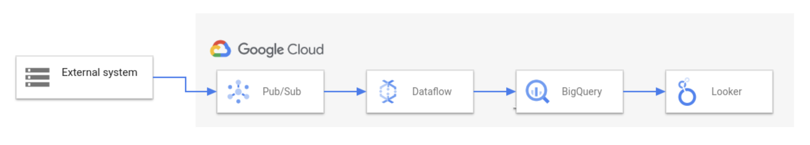

18. データ分析サービス¶
18.1. データ分析基盤¶
データ分析基盤とは、様々なデータを収集し、加工処理を施し、蓄積・分析して可視化・活用するまでの一連の基盤。
データの収集 → 処理 → 蓄積 → 分析 → 活用。まず「収集」フェーズで各種ソースからデータを集め、次に「処理」フェーズでETLによるデータの加工を行う。その後「蓄積」フェーズでデータレイクやデータウェアハウスにデータを保存し、「分析」フェーズで蓄積したデータにクエリや解析を実施、得られた知見を「活用」フェーズでダッシュボード可視化やアプリケーションへの組み込みによってビジネスに役立てる。この一連の流れを支える各種GCPサービスが相互に連携して、スムーズなデータパイプラインを構築できるようになっている。
 Dataflow の概要
データ分析基盤を考える上で重要な概念を整理しておく。
項目 |
役割・目的 |
データの状態 |
主な利用者・用途 |
GCPの代表サービス |
|---|---|---|---|---|
データレイク |
さまざまなソースから集めた生のデータを大量に蓄積する |
未加工・非構造化・多様 |
後で必要に応じて分析・加工 |
Cloud Storage |
ETL |
データを抽出し、変換・加工し、保存先にロードする一連の処理フロー |
処理プロセス |
データ整備・統合 |
Dataflow, Dataprocなど |
データウェアハウス |
分析に適した形に整理・構造化したデータを集積する |
加工済み・構造化 |
共通指標やビジネス分析用 |
BigQuery |
データマート |
特定用途や部門向けに必要なデータだけを切り出して提供する |
加工済み・構造化（用途特化サブセット） |
部門・チームごとの個別分析 |
BigQuery（マート設計で分離） |
18.2. 収集¶
最初のフェーズである「収集」では、様々なソースからデータを集めてくる。データのソースには、例えばアプリケーションから発生するログやイベントデータ、IoTデバイスが出力するセンサーデータ、また企業の業務システムで利用されるデータベースなどが含まれる。
GCPにはリアルタイムデータを取り込むためのサービスと、データベースからのデータ抽出に適したサービスが用意されており、代表的なものが Cloud Pub/Sub と Datastream である。
18.2.1. Cloud Pub/Sub¶
Cloud Pub/Sub は、GCPのリアルタイムメッセージングサービスである。Publish/Subscribe（発行購読）モデルに基づき、データの送信元（パブリッシャー）と受信側（サブスクライバー）を非同期メッセージキューでつなぐことで、大量のイベントデータをスケーラブルかつ安定的に受け渡しできる。
Pub/Subはフルマネージドサービスであり、自動でスケーリングするため、突発的な大量データ流入にも耐えられるのが特徴だ。データ分析基盤においては、ストリーミングデータのパイプ役として機能し、後段のDataflowなど処理基盤にリアルタイムデータを渡すハブとなる。
18.2.2. Datastream¶
Datastream はデータベースの内容をリアルタイムに他システムへ複製（レプリケーション）するためのサービスである。具体的には、ソースとなるRDBMS（リレーショナルデータベース）の更新履歴を取得し、追加・変更・削除されたデータを継続的にストリーム配信する。これを Change Data Capture (CDC) と呼び、DatastreamはCDCのマネージドサービスと位置付けられる。
Datastreamでストリーム取得したデータの送り先（デスティネーション）としては、BigQuery もしくは Cloud Storage を選択できる。BigQueryを指定した場合は、データベースの変更データが直接リアルタイムにBigQueryのテーブルへ反映される。Cloud Storageを指定した場合は、更新ログが一旦オブジェクトファイル（例えばCSVやJSON）としてストレージに書き出される。この後者のケースでは、蓄積されたファイルを次の処理フェーズで読み込んで変換し、BigQueryなどにロードすることになる。
18.3. 処理¶
「処理」フェーズでは、収集したデータに対してクリーニング（不要なデータの除去や欠損値の補完）、変換（フォーマット統一や集計計算）、結合（他データセットとのマージ）などの加工を行い、分析に適した形に整える。これはまさに前述したETL（抽出・変換・格納）の核となる部分。
GCPでは、このデータ処理パイプラインを担うサービスとして Dataflow と Dataproc が代表的。
18.3.1. Dataflow¶
Dataflow は、Google Cloudの提供するフルマネージドかつサーバーレスなデータ処理サービスであり、ストリーミング処理とバッチ処理を単一のモデルで実現できるのが特徴。
ユーザーはJavaやPythonでデータの流れ（パイプライン）をコードとして定義する。そのパイプラインをDataflowサービス上にデプロイするだけで、必要なリソースが自動的にプロビジョニングされスケーリングも自動で行われる。 要するに、大量データの並列処理基盤を意識することなく、データの読み込み→変換→出力という一連の処理ロジックに専念できるのがDataflowの利点。
Dataflowはストリーミングとバッチの双方に対応するため、多様なユースケースで利用される。例えばリアルタイム処理の例では、先の収集フェーズでPub/Subに流れてきたイベントデータをDataflowが即座に読み取り、例えば1分ごとの集計やフィルタリングを行ってからBigQueryに書き込む、というストリーミングETLパイプラインを構築できる。またバッチ処理の例では、毎日生成されるログファイルをCloud StorageからDataflowでまとめて読み込み、不要な項目を除去したりフォーマット変換した上でBigQueryにロードするといった定期バッチETLも可能。
18.3.2. Dataproc¶
Dataproc は、Apache HadoopやSparkといったビッグデータ処理フレームワークをクラウド上で動かすためのマネージドサービスである。平たく言えば「GCP上で簡単にHadoop/Sparkクラスタを作って使えるサービス」であり、既存のオープンソースビッグデータツール群を活用したい場合に適している。
18.4. 蓄積¶
「蓄積」フェーズでは、処理済みのデータを長期間保存し、後から効率よく参照・分析できる状態にする。前述のデータレイクとデータウェアハウスという概念がここで具体的な形となる。
GCPにおいてデータ蓄積の中核をなすサービスが Cloud Storage と BigQuery である。
18.4.1. Cloud Storage¶
Google Cloudのオブジェクトストレージサービスだ。ファイルやオブジェクトをほぼ無制限に保存でき、堅牢な耐久性と可用性を備えている。Cloud Storageは構造化データ・非構造化データを問わず格納できるため、分析基盤ではデータレイクとして機能する。
Cloud Storage上のデータは、前述のDataflowやDataprocといった処理系から直接読み書きできる。DataflowではCloud Storage上の新規ファイル出現をトリガーに処理を開始する仕組み（Cloud StorageのPub/Sub通知機能）も利用でき、データの着地地点としても使い勝手が良い。
18.4.2. BigQuery¶
GCPが提供するエンタープライズ向けのデータウェアハウス。BigQueryはテーブル形式の構造化データをペタバイト規模まで保存でき、標準SQLによる高速なクエリ実行を可能にしている。サーバーレス型の完全マネージドサービスで、ユーザーはインフラ管理を意識せずにデータの格納と分析処理に集中できる。蓄積フェーズにおいては、DataflowやDataprocで処理された後のクレンジング済みデータをBigQueryにロードすることで、分析に最適化された状態で保存しておく役割を果たす。
BigQueryはデータを保存するだけでなく後続の分析クエリに対して高い性能を発揮するよう列指向かつ圧縮されたフォーマットでデータを保持している。また、パーティショニングやクラスタリングといった機能で大量データを効率よく整理することも可能。
BigQuery のクエリには
「インタラクティブ（即時）」
「バッチ（Batch）」
の2種類の優先度があります。バッチジョブとして実行すると、BigQuery 共有リソースのアイドル状態を利用して処理されるため、他の重要なインタラクティブクエリの邪魔をしません。
18.5. 分析¶
分析フェーズでは、データから有用な知見や指標を引き出すために、クエリを発行したり統計・機械学習手法を適用したりする。GCPにおける主要な分析エンジンは引き続き BigQuery である。
18.5.1. BigQuery¶
BigQueryは蓄積フェーズでも登場したが、その本領は強力な分析処理にある。 BigQuery上のデータに対しては、ユーザは標準的なSQL言語でクエリを実行できる。例えば、「月別の売上合計を商品カテゴリごとに集計する」といったSQLを投げれば、BigQueryの背後で多数のサーバーが並列処理を行い、膨大なレコードに対しても数秒〜数十秒程度で結果を返す。これにより、従来のオンプレミスデータベースでは何時間もかかっていたような集計分析が、インタラクティブな速度で可能となる
分析フェーズでは、BigQuery上に蓄積されたデータから自由に必要な視点で取り出せるとはいえ、全社データがすべて一箇所にまとまっているとそのスキーマ（構造）は非常に巨大かつ複雑になることも多い。そこで、しばしば大規模なデータウェアハウスから派生して、特定分野に特化したデータマートが作られる。データマートは前述の通り、特定部署や用途向けのサブセットだが、実際の実装としてはBigQuery内で特定のプロジェクト・データセットに限定したテーブル群として構築されたり、ビューを用いて元のデータウェアハウスから必要項目だけを切り出して提供したりする。
18.6. 活用¶
最後の「活用」フェーズでは、分析の結果を人々が理解・利用しやすい形にして届ける段階である。蓄積・分析したデータから得られた知見も、それが経営層や現場の担当者に共有され、意思決定や業務改善に活かされなければ宝の持ち腐れになってしまう。
GCPでは、この活用の部分を支援するBI（ビジネスインテリジェンス）ツールとして Looker と Looker Studio が提供されている
LookerとLooker StudioはいずれもBigQueryなどの分析基盤と組み合わせて使われるが、その用途とスケールは異なる。一般に、エンタープライズ規模で厳密なデータ統制や高度な統合分析が必要な場合にはLookerが選択され、まずは簡易な可視化から始めたい場合や小規模チームでの利用にはLooker Studioが好適である。
18.6.1. Looker¶
Looker は、Google Cloudが提供するエンタープライズ向けのデータプラットフォームである。一般にはBIツールに分類されるが、単なるダッシュボード可視化ツールに留まらず、LookML と呼ばれる独自のモデリング言語を用いてデータのビジネス定義や指標を一元管理できる点に特徴がある。データアナリストがLookMLで「売上高」「顧客数」「利益率」などの指標や各種ディメンションの定義をコード化しモデルとして構築しておけば、組織内の誰もがその共通定義にもとづいてデータにアクセス・分析できるようになる。これにより、「部署によって数値の定義が違う」「計算方法が人によってバラバラ」といった事態を避け、全社で一貫した分析結果を得ることが可能となる。
18.6.2. Looker Studio¶
Looker Studio は、手軽に使えるクラウドベースのダッシュボードツールである。旧称を「データポータル」または「Google Data Studio」といい、2022年に名称がLookerブランドに統一され現在の名前になった。基本的に無料で利用でき、直感的なUI操作で美しい可視化レポートを作成できるのが特徴だ。Looker Studioでは、BigQueryをはじめGoogleスプレッドシートやGoogleアナリティクス、さらにはサードパーティのデータソースまで、多様なデータに接続してグラフや表を配置したレポートを作成できる。プログラミングやSQLの知識がなくても、ドラッグ＆ドロップでデータ項目をビジュアルに落とし込めるため、現場の担当者が自らデータを可視化して共有するといったセルフサービスBIにも向いている。